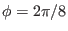
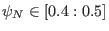
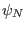
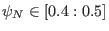
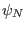
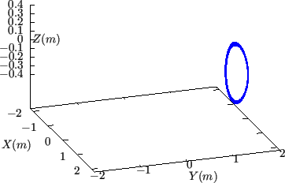
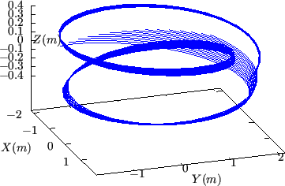
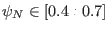
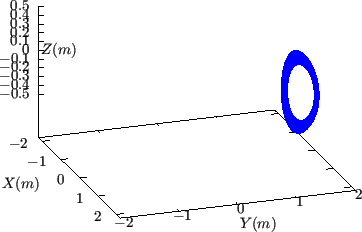
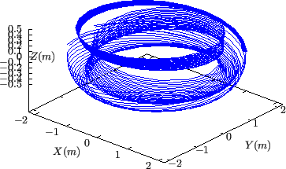

Figure 21 compares the  coordinate surface of
coordinate surface of
 coordinates with the
coordinates with the  coordinate surface of
coordinate surface of
 coordinates.
coordinates.
Figure 21:
Comparison between isosurface of
 (projection of magnetic field lines onto
plane) and
isosurface of
 . The isosurface is made of a
family of contours of
, which are all magnetic field
lines. These field lines are traced by starting from a series of points on
the low-field-side midplane
. The isosurface is made of a
family of contours of
, which are all magnetic field
lines. These field lines are traced by starting from a series of points on
the low-field-side midplane
 at different radial locations and
the field lines are followed by a complete poloidal loop. The radial range
is given by
, where  is the normalized
poloidal magnetic flux. Magnetic field from EAST discharge #59954@3.03s.
at different radial locations and
the field lines are followed by a complete poloidal loop. The radial range
is given by
, where  is the normalized
poloidal magnetic flux. Magnetic field from EAST discharge #59954@3.03s.
|

 |
Figure 22:
The same plot as in Fig. 21 but with a larger radial
range.
, where is the normalized poloidal
magnetic flux.
|

 |
yj
2018-03-09